공조냉동기계기사(구) (2013-06-02 기출문제)
1과목: 기계열역학
1. 4kg의 공기를 온도 15℃에서 일정 체적으로 가열하여 엔트로피가 3.35 kJ/K 증가하였다. 가열 후 온도는 어느 것에 가장 가까운가? (단, 공기의 정적 비열은 0.717 kJ/kg℃ 이다.)
- 927 K
- 337 K
- 535 K
- 483 K
(정답률: 59%)

2. 전류 25A, 전압 13V를 가하여 축전지를 충전하고 있다. 충전하는 동안 축전지로부터 15W의 열손실이 있다. 축전지의 내부에너지는 어떤 비율로 변하는가?
- +310 J/s
- -310 J/s
- +340 J/s
- -340 J/s
(정답률: 67%)
3. 어떤 사람이 만든 열기관을 대기압 하에서 물의 빙점과 비등점 사이에서 운전할 때 열효율이 28.6% 였다고 한다. 다음에서 옳은 것은?
- 이론적으로 판단할 수 없다.
- 경우에 따라 있을 수 있다.
- 이론적으로 있을 수 있다.
- 이론적으로 있을 수 없다.
(정답률: 72%)
4. 1 kg의 공기가 압력 P1=100kPa, 온도 t1=20℃의 상태로부터 P2=200kPa, 온도 t2=100℃의 상태로 변화하였다면 체적은 약 몇 배로 되는가?
- 0.64
- 1.57
- 3.64
- 4.57
(정답률: 58%)
5. 기체가 167 kJ의 열을 흡수하고 동시에 외부로 20kJ의 일을 했을 때, 내부에너지의 변화는?
- 약 187 kJ 증가
- 약 187 kJ 감소
- 약 147 kJ 증가
- 약 147 kJ 감소
(정답률: 72%)
6. 성능계수가 3.2인 냉동기가 시간당 20MJ의 열을 흡수한다. 이 냉동기를 작동하기 위한 동력은 몇 kW인가?
- 2.25
- 1.74
- 2.85
- 1.45
(정답률: 71%)
7. 이상기체를 단열팽창시키면 온도는 어떻게 되는가?
- 내려간다.
- 올라간다.
- 변화하지 않는다.
- 알 수 없다.
(정답률: 53%)
8. 가정용 냉장고를 이용하여 겨울에 난방을 할 수 있다고 주장하였다면 이 주장은 이론적으로 열역학 법칙과 어떠한 관계를 갖겠는가?
- 열역학 1법칙에 위배된다.
- 열역학 2법칙에 위배된다.
- 열역학 1, 2법칙에 위배된다.
- 열역학 1, 2법칙에 위배되지 않는다.
(정답률: 66%)
9. 표준 대기압, 온도 100℃ 하에서 포화액체 물 1kg이 포화증기로 변하는데 열 2255 kJ이 필요하였다. 이 증발과정에서 엔트로피(entropy)의 증가량은 얼마인가?
- 18.6 kJ/kgㆍK
- 14.4 kJ/kgㆍK
- 10.2 kJ/kgㆍK
- 6.0 kJ/kgㆍK
(정답률: 74%)
10. 밀폐시스템에서 초기 상태가 300K, 0.5 m3인 공기를 등온과정으로 150 kPa에서 600 kPa까지 천천히 압축 하였다. 이 과정에서 공기를 압축하는데 필요한 일은 약 몇 kJ인가?
- 104
- 208
- 304
- 612
(정답률: 55%)
11. 다음 중 이상적인 오토사이클의 효율을 증가시키는 방안으로 맞는 것은?
- 최고온도 증가, 압축비 증가, 비열비 증가
- 최고온도 증가, 압축비 감소, 비열비 증가
- 최고온도 증가, 압축비 증가, 비열비 감소
- 최고온도 감소, 압축비 증가, 비열비 감소
(정답률: 59%)
12. 25℃, 0.01 MPa 압력의 물 1kg을 5 MPa 압력의 보일러로 공급할 때 펌프가 가역단열 과정으로 작용한다면 펌프에 필요한 일의 양에 가장 가까운 값은? (단, 울의 비체적은 0.001 m3/kg이다.)
- 2.58 kJ
- 4.99 kJ
- 20.10 kJ
- 40.20 kJ
(정답률: 74%)
13. 출력 10000 kW의 터빈 폴랜트의 매시 연료소비량이 5000 kg/hr 이다. 이 플랜트의 열효율은? (단, 연료의 발열량은 33440 kJ/kg 이다.)
- 25%
- 21.5%
- 10.9%
- 40%
(정답률: 73%)
14. 초기에 온도 T, 압력 P 상태의 기체의 질량 m이 들어있는 견고한 용기에 같은 기체를 추가로 주입하여 질량 3m이 온도 2T 상태로 들어있게 되었다. 최종 상태에서 압력은? (단, 기체는 이상기체이다.)
- 6P
- 3P
- 2P
- 3P/2
(정답률: 78%)
15. 다음 정상유동 기기에 대한 설명으로 맞는 것은?
- 압축기의 가역 단열 공기(이상기체)유동에서 압력이 증가하면 온도는 감소한다.
- 일차원 정상유동 노증 내 작동 유체의 출구 속도는 가역 단열과정이 비가역 과정보다 빠르다.
- 스로틀(throttle)은 유체의 급격한 압력증가를 위한 장치이다.
- 디퓨저(diffuser)는 저속의 유체를 가속시키는 기기로 압축기 내 과정과 반대이다.
(정답률: 56%)
16. 온도가 127℃, 압력이 0.5MPa, 비체적이 0.4m3/kg 인 이상기체가 같은 압력 하에서 비체적이 0.3m3/kg으로 되었다면 온도는 약 몇 ℃ 인가?
- 16
- 27
- 96
- 300
(정답률: 62%)
17. 온도 5℃와 35℃ 사이에서 작동되는 냉동기의 최대 성능계수는?
- 10.3
- 5.3
- 7.3
- 9.3
(정답률: 76%)
18. 흡수식 냉동기에서 고온의 열을 필요로 하는 곳은?
- 응축기
- 흡수기
- 재생기
- 증발기
(정답률: 60%)
19. 다음의 기본 랭킨 사이클의 보일러에서 가하는 열량을 엔탈피의 값으로 표시하였을 때 올바른 것은? (단, h는 엔탈피이다.)
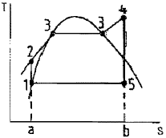
- h5 - h1
- h4 - h5
- h4 - h2
- h2 - h1
(정답률: 66%)
20. 포화상태량 표를 참조하여 온도 -42.5℃, 압력 100 kPa 상태의 암모니아 엔탈피는 구하면?
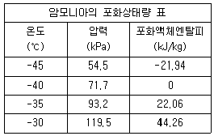
- -10.97 kJ/kg
- 11.03 kJ/kg
- 27.80 kJ/kg
- 33.16 kJ/kg
(정답률: 57%)
2과목: 냉동공학
21. 1RT의 냉방능력을 얻기 위해서는 개략적으로 냉방능력의 20%에 상당하는 압축동력을 필요로 한다. 이 경우 수냉식 응축기를 사용하고 냉각수 입구수온 tw1=28℃, 출구온도 tw2=33℃로 사용하기 위해서는 얼마의 냉각수량을 필요로 하는가?
- 13.28(L/min)
- 15.45L/min)
- 16.53(L/min)
- 18.72(L/min)
(정답률: 52%)
22. 냉장고의 방열벽의 열통과율이 0.131 kcal/m2h℃일 때 방열벽의 두께는 약 몇 cm인가? (단, 외기와 외벽면과의 열전달률 : 20 kcal/m2h℃, 고내 공기와 내벽면과의 열전달률 : 10 kcal/m2h℃, 방열재의 열전도율 0.04kcal/mh℃ 이다. 또 방열재 이외의 열전도 저항은 무시하는 것으로 한다.)
- 0.3
- 3
- 30
- 300
(정답률: 62%)
23. 다음 중 냉동장치의 액분리기와 유분리기의 설치 위치를 올바르게 나타낸 것은?
- 액분리기 : 증발기와 압축기 사이
유분리기 : 압축기와 응축기 사이 - 액분리기 : 증발기와 압축기 사이
유분리기 : 응축기와 팽창밸브 사이 - 액분리기 : 응축기와 팽창밸브 사이
유분리기 : 증발기와 압축기 사이 - 액분리기 : 응축기와 팽창밸브 사이
유분리기 : 압축기와 응축기 사이
(정답률: 76%)
24. 암모니아 냉매의 누설검지에 대한 성명으로 잘못된 것은?
- 냄새로써 알 수 있다.
- 리트머스 시험지가 청색으로 변한다.
- 페놀프타레인 시험지가 적색으로 변한다.
- 할로겐 누설 검지기를 사용한다.
(정답률: 77%)
25. 유분리기를 반드시 사용하지 않아도 되는 경우는?
- 만액식 증발기를 사용하는 경우
- 토출가스 배관이 길어지는 경우
- 증발온도가 낮은 경우
- 프레온 냉매를 건식증발기에 사용하는 소형냉동장치의 경우
(정답률: 70%)
26. 수냉 패키지형 공조기의 냉각수 온도를 측정하였더니 입구온도 32℃, 출구온도 37℃, 수량 70L/min였다. 이 밀폐형 압축기의 소요동력이 5kW일 때 이 공조기의 냉동능력은 몇 kcal/h인가? (단, 열손실은 무시한다.)
- 21300
- 18200
- 16700
- 14200
(정답률: 60%)
27. 고압가스 제상장치에서 필요 없는 것은?
- 압축기
- 팽창밸브
- 응축기
- 열교환기
(정답률: 63%)
28. 나선상의 관에 냉매를 통과시키고 그 나선관을 원형 또는 구형의 수조에 담그고, 물을 순환시켜서 냉각하는 방식의 응축기는?
- 대기식 응축기
- 이중관식 응축기
- 지수식 응축기
- 증발식 응축기
(정답률: 74%)
29. 증발기내의 압력에 의해 작동하는 팽창밸브는?
- 정압식 자동 팽창밸브
- 열전식 팽창밸브
- 모세관
- 수동식 팽창밸브
(정답률: 80%)
30. 물(H2O)-리튬브로마이드(LiBr) 흡수식 냉동기 설명 중 잘못된 것은?
- 특수 처리한 순수한 물을 냉매로 사용한다.
- 열교환기의 저항 등으로 인해 보통 7℃ 전후의 냉수를 얻도록 설계되어 있다.
- LiBr 수용액은 성질이 소금물과 유사하여, 농도가 진하고 온도가 낮을수록 냉매 증기를 잘 흡수한다.
- 묽게 된 흡수액(희용액)을 연속적으로 사용할 수 있도록 하는 장치가 압축기이다.
(정답률: 63%)
31. 이상적 냉동사이클의 상태변화 순서를 표현한 것 중 옳은 것은?
- 단열팽창 → 단열압축 → 단열팽창 → 단열압축
- 단열압축 → 단열팽창 → 등온압축 → 등온팽창
- 단열팽창 → 등온팽창 → 단열압축 → 등온압축
- 단열압축 → 등온팽창 → 등온압축 → 단열팽창
(정답률: 71%)
32. 제빙에 필요한 시간을 구하는 식으로
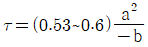
과 같은 식이 사용된다. 이 식에서 a와 b가 의미하는 것은?- a : 결빙두께, b : 브라인온도
- a : 브라인온도, b : 결빙두께
- a : 결빙두께, b : 브라인유량
- a : 브라인유량, b : 결빙두께
(정답률: 72%)
33. 30RT, R-22 냉동기에서 증발기입구온도엔탈피 97kcal/kg, 출구엔탈피 147kcal/kg, 응축기입구엔탈피 151 kcal/kg 이다. 이 냉동기의 냉동효과는 얼마인가?
- 30 kcal/kg
- 35 kcal/kg
- 45 kcal/kg
- 50 kcal/kg
(정답률: 62%)
34. 어떤 냉장고의 증발기가 냉매와 공기의 평균온도차가 8℃로 운전되고 있다. 이때 증발기의 열통과율이 20 kcal/m2h℃ 라고 하면 1냉동통당 증발기의 소요 외표면적은 몇 m2 인가?
- 15.03
- 17.83
- 20.75
- 23.42
(정답률: 72%)
35. 15℃의 물로부터 0℃의 얼음을 매시 50kg을 만드는 냉동기의 냉동능력은 약 몇 냉동톤인가?
- 1.4 냉동톤
- 2.2 냉동톤
- 3.1 냉동톤
- 4.3 냉동톤
(정답률: 65%)
36. 증발식 응축기의 보급수량의 결정요인과 관계가 없는 것은?
- 냉각수 상ㆍ하부의 온도차
- 냉각할 때 소비한 증발수량
- 탱크내의 불순물의 농도를 증가시키지 않기 위한 보급 수량
- 냉각공기와 함께 외부로 비산되는 소비수량
(정답률: 53%)
37. 공기열원 열펌프 장치를 여름철에 냉방 운전할 때 외기의 건구온도가 저하하면 일어나는 현상으로 올바른 것은?
- 응축압력이 상승하고, 장치의 소비전력이 증가한다.
- 응축압력이 상승하고, 장치의 소비전력이 감소한다.
- 응축압력이 저하하고, 장치의 소비전력이 증가한다.
- 응축압력이 저하하고, 장치의 소비전력이 감소한다.
(정답률: 61%)
38. 다음 중 신재생에너지라고 할 수 없는 것은?
- 지열에너지
- 태양열에너지
- 풍력에너지
- 원자력에너지
(정답률: 85%)
39. 프레온 냉매를 사용하는 냉동장치에 공기가 침입하면 어떤 현상이 일어나는가?
- 고압 압력이 높아지므로 냉매 순환량이 많아지고 냉동능력도 증가한다.
- 냉동톤당 소요동력이 증가한다.
- 고압 압력은 공기의 분압만큼 낮아진다.
- 배출가스의 온도가 상승하므로 응축기의 열통과율이 높아지고 냉동능력도 증가한다.
(정답률: 76%)
40. 증기 압축식 냉동장치의 운전 중에 리키드백(액백)이 발생되고 있을 때 나타나는 현상 중 옳은 것은?
- 흡입압력이 현저하게 저하한다.
- 토출관이 뜨거워진다.
- 압축기에 상(箱)이 생긴다.
- 압축기의 토출압력이 낮아진다.
(정답률: 68%)
3과목: 공기조화
41. 증기난방 방식에 대한 설명 중 틀린 것은?
- 배관방법에 따라 단관식과 복관식이 있다.
- 환수방식에 따라 중력환수식과 진공환수식, 가계환수식으로 구분한다.
- 제어성이 온수에 비해 양호하다.
- 부하기기에서 증기를 응축시켜 응축수만을 배출한다.
(정답률: 67%)
42. 보일러의 수위를 제어하는 궁극적인 목적이라 할 수 있는 것은?
- 보일러의 급수장치가 동결되지 않도록 하기 위하여
- 보일러의 연료공급이 잘 이루어지도록 하기 위하여
- 보일러가 과열로 인해 손상되지 않도록 하기 위하여
- 보일러에서의 출력을 부하에 따라 조절하기 위하여
(정답률: 75%)
43. 공기세정기에 대한 설명으로 틀린 것은?
- 세정기 단면의 종횡비를 크게 하면 성능이 떨어진다.
- 공기세정기의 성능에 가장 큰 영향을 주는 것은 분무수의 압력이다.
- 세정기 출구에는 분무된 물방울의 비산을 방지하기 위해 엘리미네이터를 설치한다.
- 스프레이 헤어의 수를 뱅크(bank)라 하고 1본을 1뱅크, 2본을 2뱅크라 한다.
(정답률: 43%)
44. 다음 조건의 외기와 재순환 공기를 혼합하려고 할 때 혼합공기의 건구온도는 약 얼마인가?
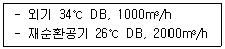
- 31.3℃
- 28.6℃
- 18.6℃
- 10.3℃
(정답률: 72%)
45. 900W의 형광등 밑에서 20명이 사무를 보고 있는 사무실의 전 발생열량은 얼마인가? (단, 1인당 인체의 발생열량은 현열 50 kcal/h, 잠열 42 kcal/h, 형광등의 1kW당 발열량은 1000 kcal/h로 한다.)
- 1880 kcal/h
- 2150 kcal/h
- 2740 kcal/h
- 3780 kcal/h
(정답률: 59%)
46. 공기조화설비의 개방식 축열수조에 대한 설명으로 틀린 것은?
- 태양열 이용식에서 열회수의 피크시와 난방부하의 피크시가 어긋날 때 이것을 조정할 수 있다.
- 값이 비교적 저렴한 심야전력을 이용할 수 있다.
- 호텔 등에서 생기는 심야의 부하에 열원의 가동없이 펌프운전만으로 대응할 수 있다.
- 공조기에 사용되는 냉수는 냉동기 출구측보다 다소 높게 되어 2차측의 온도차를 크게 할 수 있다.
(정답률: 58%)
47. 공기 중의 악취제거를 위한 공기정화 에어필터로 가장 적합한 것은?
- 유닛형 필터
- 롤형 필터
- 활성탄 필터
- 고성능 필터
(정답률: 84%)
48. 두께 15cm, 열전도율이 1.4 kcal/mh℃인 철근 콘크리트의 외벽체에 대한 열관류율 (kcal/m2h℃)은 약 얼마인가? (단, 내측표면 열전달률은 8 kcal/m2h℃, 외측 표면 열전달률은 20 kcal/m2h℃ 이다.)
- 0.1
- 3.5
- 5.9
- 7.6
(정답률: 69%)
49. 습공기 100 kg이 있다. 이 때 혼합되어 있는 수증기의 무게를 2kg 이라고 한다면 공기의 절대습도는 약 얼마인가?
- 0.02 kg/kg
- 0.002 kg/kg
- 0.2 kg/kg
- 0.0002 kg/kg
(정답률: 74%)
50. 온도 25℃, 상대습도 60%의 공기를 32℃로 가열하면 상대습도는 약 몇 %가 되는가? (단, 25℃의 포화수증기압은 23.5 mmHg 이고, 32℃의 포화 수증기압은 35.4 mmHg이다.)
- 25%
- 40%
- 55%
- 70%
(정답률: 57%)
51. 공기조화기에 걸리는 열부하 요소에 대한 것이다. 적당하지 않은 것은?
- 외기부하
- 재열부하
- 덕트계통에서의 열부하
- 배관계통에서의 열부하
(정답률: 67%)
52. 온수난방에 대한 설명으로 틀린 것은?
- 온수의 체적팽창을 고려하여 팽창탱크를 설치한다.
- 보일러가 정지하여도 실내온도의 급격한 강하가 적다.
- 밀폐식일 경우 배관의 부식이 많아 수명이 짧다.
- 방열기에 공급되는 온수 온도와 유량 조절이 용이하다.
(정답률: 72%)
53. 공기조화방식에서 변풍량 단일덕트 방식의 특징으로 틀린 것은?
- 변풍량 유닛을 실별 또는 존(zone)별로 배치함으로써 개별제어 및 존 제어가 가능하다.
- 부하변동에 따라서 실내온도를 유지할 수 없으므로 열원설비용 에너지 낭비가 많다.
- 송풍기의 풍량제어를 할 수 있으므로 부분 부하시 반송 에너지 소비량을 경감시킬 수 있다.
- 동시사용률을 고려하여 기기용량을 결정할 수 있다.
(정답률: 75%)
54. 환기 및 배연설비에 관한 설명 중 틀린 것은?
- 환기랑 실내공기의 정화, 발생열의 제거, 산소의 공급, 수증기 제거 등을 목적으로 한다.
- 환기는 급기 및 배기를 통하여 이루어진다.
- 환기는 자연 환기방식과 기계 환기방식으로 구분할 수 있다.
- 배연설비의 주 목적은 화재 후기에 발생하는 연기만을 제거하기 위한 설비이다.
(정답률: 81%)
55. 다음 중 분진 포집율의 측정법이 아닌 것은?
- 비색법
- 계수법
- 살균법
- 중량법
(정답률: 73%)
56. 극간풍이 비교적 많고 재실 인원이 적은 실외 중앙공조방식으로 가장 경제적인 방식은?
- 변풍량 2종덕트 방식
- 팬코일 유닛 방식
- 정풍량 2종덕트 방식
- 정풍량 단일덕트 방식
(정답률: 56%)
57. 에어와셔의 입구공기의 건구온도, 습구온도, 노점온도를 각각 t1, t1', t1'' 라고 하고 출구 수온을 tw2라 할 때 기능을 잘못 나타낸 것은?
- 공기냉각 : tw2＜t1
- 공기감습 : tw2＜t1''
- 공기가열가습 : tw2＞t1'
- 공기냉각감습 : t1''＜tw2＜t1'
(정답률: 57%)
58. 개별유닛 방식 중의 하나인 열펌프 유닛 방식의 특징을 설명한 것으로 틀린 것은?
- 냉난방부하가 동시에 발생하는 건물에서는 열회수가 가능하다.
- 습도제어가 쉽고 필터 효율이 좋다.
- 증설, 간벽 변경 등에 대한 대응이 용이하고 공조방식에 융통성이 있다.
- 난방목적으로 사용할 때의 성적계수는 냉방시의 경우에 비해 1만큼 더 크다.
(정답률: 47%)
59. 지하의 일정깊이로 내려가면 온도가 거의 일정하다는 원리를 이용하여 에너지를 절감하는 지열을 이용한 히트펌프 방식에 대한 특징 중 틀린 것은?
- 시스템을 방영구적으로 사용할 수 있다,
- 가연성 연료사용으로 인한 폭발이나 화재의 위험이 없다.
- 냉난방 비용이 기존 전기나 경유를 이용한 냉난방에 비하여 절약된다.
- 연중 냉난방과 온수를 마음대로 사용할 수 없으며 실별 실내온도 조절이 가능하다.
(정답률: 77%)
60. 냉온수가 팬코일유닛에 균등하게 공급할 수 있게 하는 역순환방식을 대신하여 설치하는 것은?
- 체크밸브
- 정유량밸브
- 앵글밸브
- 삼방밸브
(정답률: 62%)
4과목: 전기제어공학
61. 다음 중 탄성식 압력계에 해당되는 것은?
- 경시관식
- 환상평형식
- 압전기식
- 벨로스식
(정답률: 80%)
62. 물체의 위치, 방위, 자세 등의 기계적 변위를 제어량으로 해서 목표값의 임의의 변화에 항상 추종되도록 구성된 제어장치는?
- 프로세스제어
- 서보기구
- 자동조정
- 정치제어
(정답률: 84%)
63. 전동기의 회전방향을 알기 위한 법칙은?
- 플레밍의 오른손법칙
- 플레밍의 왼손법칙
- 렌츠의 법칙
- 암페어의 법칙
(정답률: 72%)
64. 어떤 단상 변압기의 무부하시 2차 단자전압이 250 [V]이고, 정격 부하시의 2차 단자전압이 240 [V]일 때 전압 변동률은 약 [%] 인가?
- 4.0
- 4.17
- 5.65
- 6.35
(정답률: 40%)
65. r=2[Ω]인 저항을 그림과 같이 무한히 연결할 때 ab사이의 합성저항은 몇 [Ω]인가?
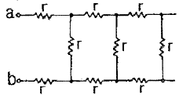
- 0
- ∞
- .2
- 2(1+√3)
(정답률: 71%)
66. 전류계와 전압계는 내부저항이 존재한다. 이 내부저항은 전압 또는 전류를 측정하고자 하는 부하의 저항에 비하여 어떤 특성을 가져야 하는가?(오류 신고가 접수된 문제입니다. 반드시 정답과 해설을 확인하시기 바랍니다.)
- 내부저항이 전류계는 가능한 커야 하며, 전압계는 가능한 작아야 한다.
- 내부저항이 전류계는 가능한 커야 하며, 전압계도 가능한 커야 한다.
- 내부저항이 전류계는 가능한 작아야 하며, 전압계는 가능한 커야 한다.
- 내부저항이 전류계는 가능한 작아야 하며, 전압계도 가능한 작아야 한다.
(정답률: 63%)
67. 엘리베이터용 전동기로서 필요한 특성이 아닌 것은?
- 기동 토크가 클 것
- 관성 모멘트가 작을 것
- 기동 전류가 클 것
- 속도 제어범위가 클 것
(정답률: 59%)
68. 서미스터는 온도가 증가할 때 그 저항은 어떻게 되는가?
- 증가한다.
- 감소한다.
- 임의로 변화한다.
- 변화가 전혀 없다.
(정답률: 61%)
69. 주파수 50[Hz], 슬립 0.2 일 때 회전수가 600[rpm]인 3살 유도전동기의 극수는?
- 4
- 6
- 8
- 10
(정답률: 70%)
70. 서보기구 제어에 사용되는 검출기기가 아닌 것은?
- 전압검출기
- 전위차계
- 싱크로
- 차동변압기
(정답률: 33%)
71. 제어계의 구성도에서 시퀀스제어계에는 없고, 피드백 제어계에는 있는 요소는?
- 조작량
- 목표값
- 검출부
- 제어대상
(정답률: 79%)
72. 전압, 전류, 주파수 등의 양을 주로 제어하는 것으로 응답속도가 빨라야 하는 것이 특징이며, 정전압장치나 발전기 및 조속기의 제어 등에 활용하는 제어방법은?
- 서보 제어
- 프로세스 제어
- 자동조정 제어
- 비율 제어
(정답률: 67%)
73. 단위 피드백 계통에서 G(s)가 다음과 같을 때 X=2이면 무슨 제동인가?
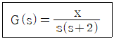
- 과제동
- 임계제동
- 무제동
- 부족제동
(정답률: 49%)
74. 그림과 같은 계전기 접점회로의 논리식은?
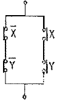
- XㆍY
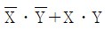
- X+Y
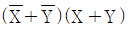
(정답률: 67%)
75. PLC프로그래밍에서 여려개의 입력 신호 중 하나 또는 그 이상의 신호가 ON되었을 때 출력이 나오는 회로는?
- AND회로
- OR회로
- NOT회로
- 자기유지회로
(정답률: 84%)
76. 입력신호 x(t)와 출력신호 y(t)의 관계가
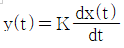
로 표현되는 것은 어떤 요소인가?- 비례요소
- 미분요소
- 적분요소
- 지연요소
(정답률: 69%)
77. 다음은 역률이 cosθ인 교류전력의 백터도이다. 이때 실제로 일을 한 전력은 어느 벡터인가?
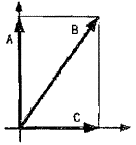
- A
- B
- C
- B, C
(정답률: 59%)
78. 그림과 같은 병렬공진회로에서 수파수를 f라 할 때, 전압 E가 전류 I보다 앞서는 조건은?
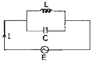
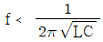
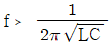
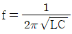
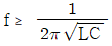
(정답률: 44%)
79. 단상전파 정류로 직류전압 100[V]를 얻으려면 변압기 2차 권선의 상전압은 몇 [V]로 하면 되는가? (단, 부하는 무유도저항이고, 정류회로 및 변압기의 전압강하는 무시한다.)
- 90
- 111
- 141
- 200
(정답률: 45%)
80. 시퀀스 제어에 관한 설명 중 틀린 것은?
- 조합 논리회로도 사용된다.
- 시간 지연요소도 사용된다.
- 유접점 계전기만 사용된다.
- 제어결과에 따라 조작이 자동적으로 이행된다.
(정답률: 71%)
5과목: 배관일반
81. 다음 중 온도계를 설치하지 않아도 되는 곳은?
- 열교환기
- 감압밸브
- 냉ㆍ온수 헤어
- 냉수코일
(정답률: 77%)
82. 일반적인 급탕부하의 계산에서 1시간의 최대급탕량이 2000L일 때 급탕 부하(kcal/h)는 얼마인가? (단, 급탕온도는 60℃를 기준으로 한다.)
- 2000
- 72000
- 120000
- 240000
(정답률: 70%)
83. 급탕배관에서 강관의 신축을 흡수하기 위한 신축이음쇠의 설치간격으로 적합한 것은?
- 10m 이내
- 20m 이내
- 30m 이내
- 40m 이내
(정답률: 50%)
84. 배관 및 수도용 동관의 표준 치수에서 호칭지름은 관의 어느 지름을 기준으로 하는가?
- 유효지름
- 안지름
- 중간지름
- 바깥지름
(정답률: 70%)
85. 냉동장치에서 압축기의 진동이 배관에 전달되는 것을 흡수하기 위하여 압축기 토출, 흡입배관 등에 설치해주는 것은?
- 팽창밸브
- 안전밸브
- 수수탱크
- 플렉시블 튜브
(정답률: 79%)
86. 다음 중 급탕설비에 관한 설명으로 맞는 것은?
- 급탕배관의 순환방식은 상향순환식, 하향순환식, 상하향 혼용식으로 구분된다.
- 물에 증기를 직접 분사시켜 가열하는 기수 혼합식의 사용증기압은 0.01mPa(0.1kgf/cm2)이하가 적당하다.
- 가열에 따른 관의 신축을 흡수하기 위하여 팽창탱크를 설치한다.
- 강제순환식 급탕배관의 구배는 1/200 이상으로 한다.
(정답률: 58%)
87. 배수트랩의 봉수파괴 원인 중 트랩 출구 수직배관부에 머리카락이나 실 등이 걸려서 봉수가 파괴되는 현상은?
- 사이펀작용
- 모세관작용
- 흡인작용
- 토출작용
(정답률: 84%)
88. 배관용 패킹재료 선정시 고려해야 할 사항으로 거리가 먼 것은?
- 유체의 압력
- 재료의 부식성
- 진동의 유무
- 시트(seat)면의 형상
(정답률: 79%)
89. 안전밸브의 그림 기호로 맞는 것은?
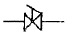
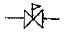
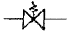
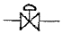
(정답률: 72%)
90. 배관에서 지름이 다른 관을 연결할 때 사용하는 것은?
- 유니언
- 니플
- 부싱
- 소켓
(정답률: 62%)
91. 공조설비 중 덕트설계시 주의사항으로 틀린 것은?
- 덕트내의 정압손실을 적게 설계할 것
- 덕트의 경로는 될 수 있는 한 최장거리로 할 것
- 소음 및 진동이 적게 설계할 것
- 건물의 구조에 맞도록 설계할 것
(정답률: 89%)
92. 배관계통 중 펌프에서의 공동현상(cavitation)을 방지하기 위한 대책으로 해당되지 않는 것은?
- 펌프의 설치 위치를 낮춘다.
- 회전수를 줄인다.
- 양 흡입을 단 흡입으로 바꾼다.
- 굴곡부를 적게 하여 흡입관의 마찰 손실수두를 작게 한다.
(정답률: 81%)
93. 다음 보기에서 설명하는 통기관 설비 방식으로 적합한 것은?
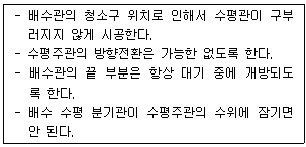
- 섹스티아(sextia)방식
- 소벤트(sovent)방식
- 각개통기 방식
- 신정통기 방식
(정답률: 71%)
94. 저온 열 교환기용 강관의 KS기호로 맞는 것은?
- STBH
- STHA
- SPLT
- STLT
(정답률: 60%)
95. 진공환수식 증기난방 설비에서 흡상이음(lift fitting)시 1단의 흡상높이로 적당한 것은?
- 1.5m 이내
- 2.5m 이내
- 3.5m 이내
- 4.5m 이내
(정답률: 75%)
96. 급수방식 중 대규모의 급수 수요에 대응이 용이하고 단수시에도 일정량의 급수를 계속할 수 있으며 거의 일정한 압력으로 항상 급수되는 방식은?
- 양수 펌프식
- 수도 직결식
- 고가 탱크식
- 압력 탱크식
(정답률: 70%)
97. 도시가스의 제조소 및 공급소 밖의 배관 표시기준에 관한 내용으로 틀린 것은?
- 가스배관을 지상에 설치할 경우에는 배관의 표면색상을 황색으로 표시한다.
- 최고사용압력이 중압인 가스배관을 매설할 경우에는 황색으로 표시한다.
- 배관을 지하에 매설하는 경우에는 그 배관이 매설되어 있음을 명확하게 알 수 있도록 표시한다.
- 배관의 외부에 사용가스명, 최고사용압력 및 가스의 흐름발향을 표시하여야 한다. 다만, 지하에 매설하는 경우에는 흐름방향을 표시하지 아니할 수 있다.
(정답률: 60%)
98. 다음 보기에서 설명하는 급수공급 방식은?
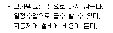
- 부스터방식
- 층별식 급수 조닝방식
- 고가수조방식
- 압력수조방식
(정답률: 78%)
99. 냉동설비에서 응축기의 냉각용수를 다시 냉각시키는 장치를 무엇이라 하는가?
- 냉각탑
- 냉동실
- 증발기
- 팽창탱크
(정답률: 84%)
100. 가스 공급방식으로 저압 공급방식의 특징 중 옳지 않은 것은?
- 수요량의 변동과 거리에 따라 공급압력이 변동한다.
- 홀더압력을 이용해 저압배관만으로 공급하므로 공급계통이 비교적 간단하다.
- 공급구역이 좁고 공급량이 적은 경우에 적합하다.
- 가스의 공급압력은 0.2~0.5Mpa(2~5kgf/cm2)정도 이다.
(정답률: 72%)
ΔS = Q/T
여기서 ΔS는 엔트로피 변화량, Q는 열 흡수량, T는 절대온도이다.
따라서,
Q = ΔS x T = 3.35 kJ/K x T
다음으로, 공기의 정적 비열과 가열된 공기의 질량을 이용하여 가열에 필요한 열량을 구해야 한다.
Q = m x c x ΔT
여기서 Q는 열량, m은 가열된 공기의 질량, c는 공기의 정적 비열, ΔT는 온도 변화량이다.
따라서,
Q = 4 kg x 0.717 kJ/kg℃ x (T - 15℃)
두 식을 연립하여 T에 대해 풀면,
3.35 kJ/K x T = 4 kg x 0.717 kJ/kg℃ x (T - 15℃)
T = 927 K
따라서, 가열 후 온도는 927 K에 가장 가깝다.